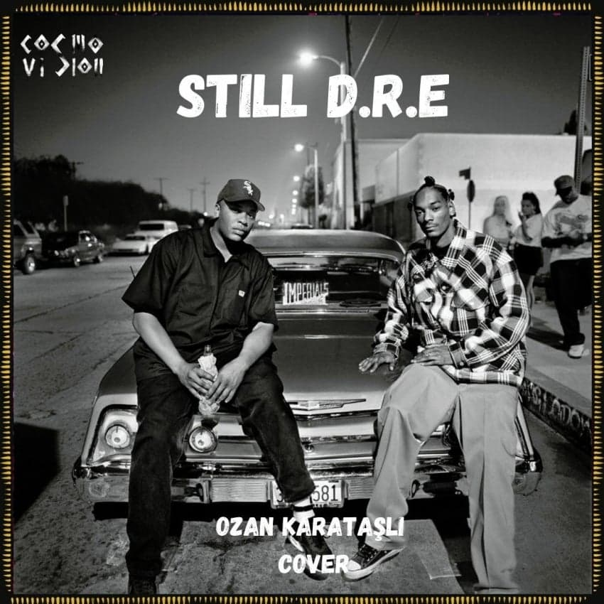
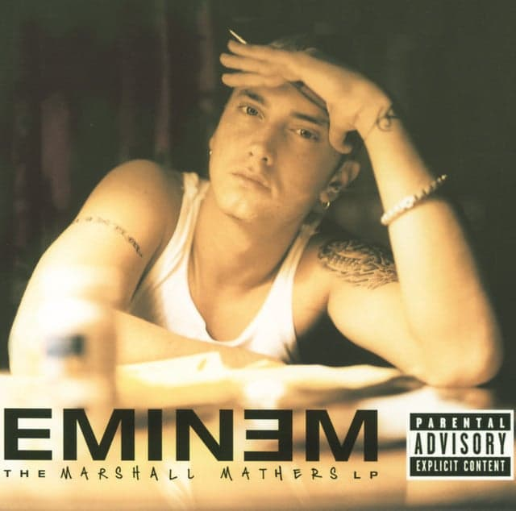
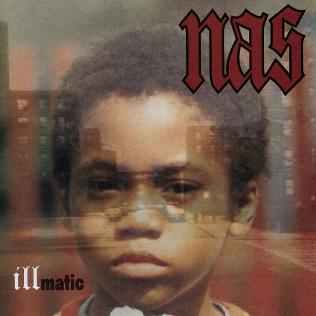
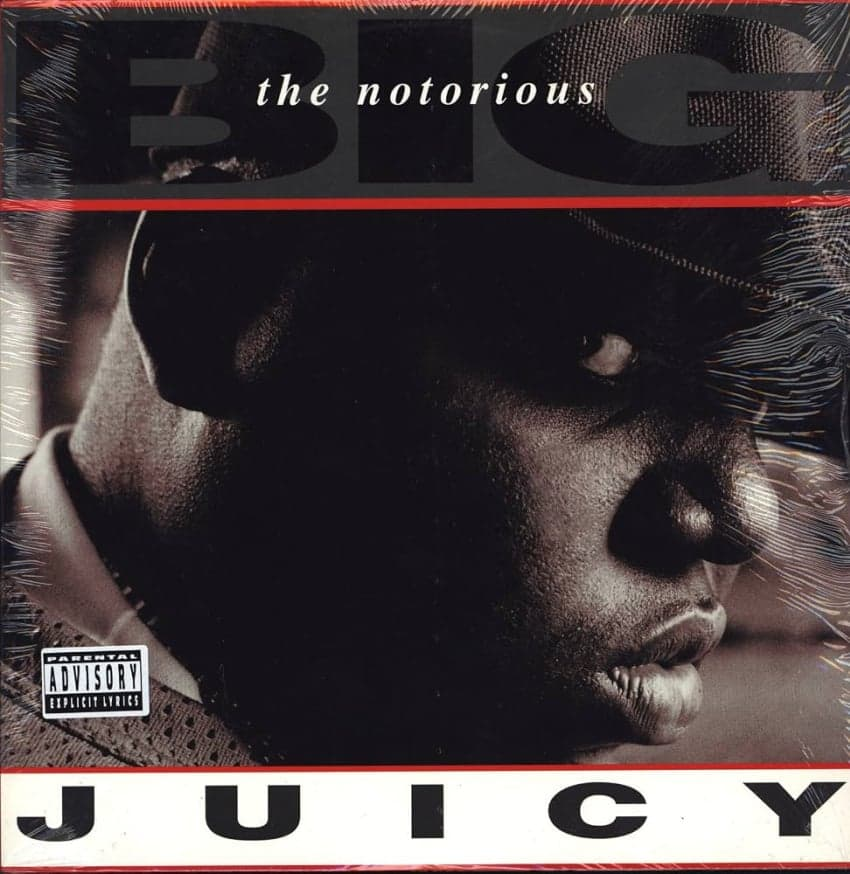
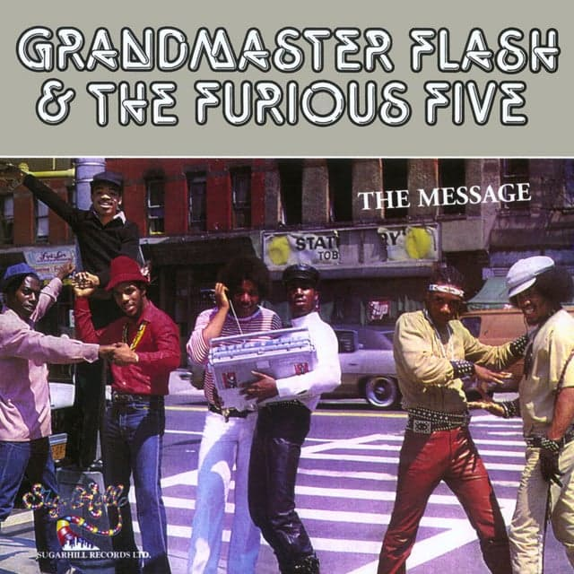
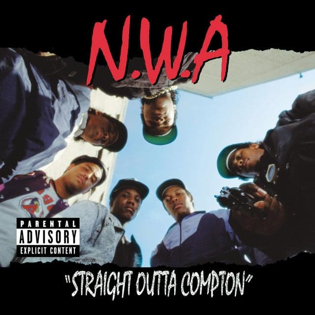
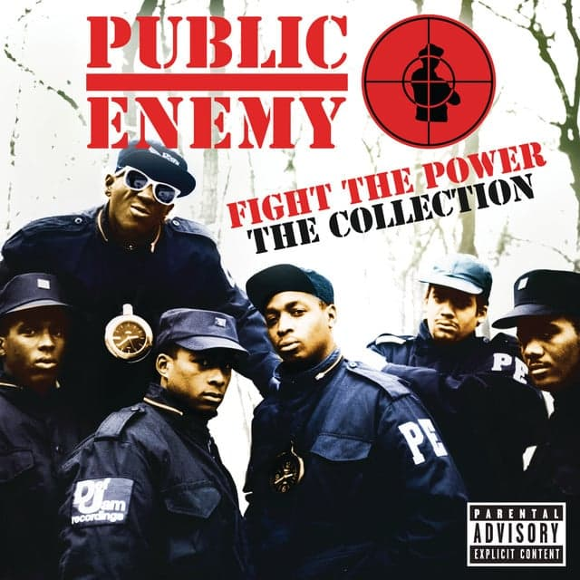
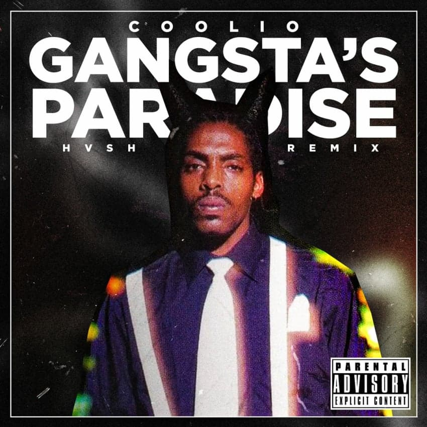
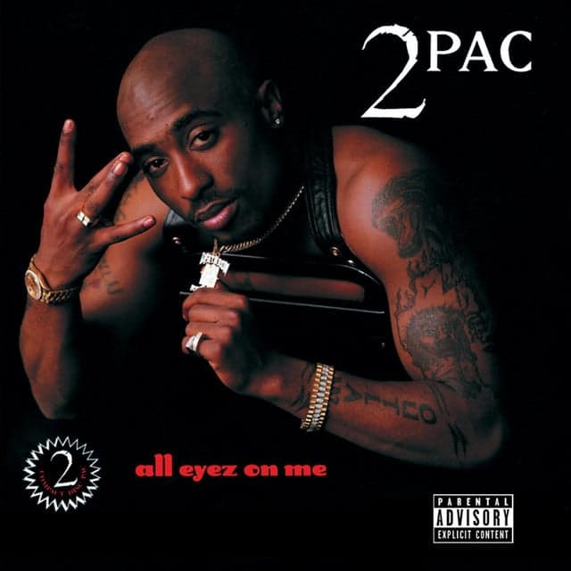
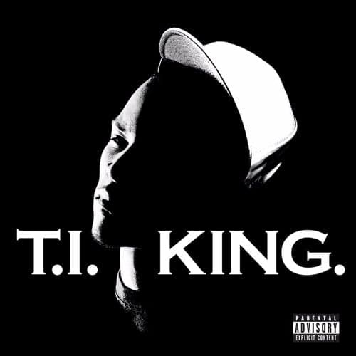

10위

Dr. Dre - Still D.R.E. (feat. Snoop Dogg) (1999): 힙합 역사상 가장 유명한 피아노 리프를 가진 곡으로, 닥터 드레의 귀환을 알리며 20년 넘게 전 세계 클럽과 스포츠 경기장을 달구는 압도적인 트랙.
9위

Eminem - Stan (feat. Dido) (2000): 광성 팬의 집착을 서사적인 스토리텔링으로 풀어내어, 현대 사전에 '열성 팬'을 뜻하는 신조어 'Stan'을 등재시킨 힙합 역사상 가장 위대한 문학적 트랙.
8위

Nas - NY State of Mind (1994): 뉴욕의 어두운 길거리 풍경을 한 편의 영화처럼 시각적으로 묘사한 가사와, 나스의 신들린 듯한 랩 스킬이 결합한 역사상 가장 완벽한 힙합 트랙 중 하나.
7위

The Notorious B.I.G. - Juicy (1994): 동부 힙합의 왕 비기의 자전적인 성공 스토리를 담은 곡으로, "시작은 미약했으나 끝은 창대하리라"는 메시지를 매끄럽고 중독성 있는 플로우에 녹여냈다.
6위

Grandmaster Flash & The Furious Five - The Message (1982): 파티 음악에 불과했던 초기 힙합에 사회적 메시지와 현실 비판을 처음으로 도입하여 힙합의 방향성을 완전히 바꾼 최초의 의식 있는 힙합 곡.
5위

N.W.A - Straight Outta Compton (1988): 갱스터 랩의 시대를 선포한 전설적인 곡으로, 사회적 반항기와 날 것 그대로의 분노를 거친 비트에 담아내며 장르적 혁명을 일으켰다.
4위

Public Enemy - Fight The Power (1989): 흑인 인권 운동과 저항 정신을 대변하는 힙합 역사상 가장 강력한 사회 비판 트랙으로, 폭발적인 에너지를 자랑한다.
3위

Coolio - Gangsta's Paradise (1995): 빌보드 핫 100 3주 연속 1위를 기록하며 전 세계적인 힙합 붐을 일으킨 곡으로, 스티비 원더의 곡을 샘플링한 어둡고 엄숙한 코러스와 쿨리오의 날카로운 가사가 압권.
2위

2Pac - Life Goes On (1996): 서부 힙합의 전설 투팍이 먼저 떠나간 친구들을 기리며 부른 곡으로, 감성적인 멜로디 위에 얹어진 진정성 있는 래핑이 시대를 초월한 울림을 준다.
1위

TI. - What You Know (2006): 애틀랜타 사우스 트랩 장르를 메인스트림 정상으로 끌어올린 곡으로, 거대하고 웅장한 신디사이저 사운드와 TI.의 독보적인 킹 스웨그가 정점을 찍은 명곡.
- dc official App
댓글
수집 당시 댓글 136개
ㅇㅇ · 11.28 08:00:22
· ㅇㅇ · 11.28 08:05:51
· ㅇㅇ · 11.28 09:19:12
· ㅇㅇ · 11.28 13:35:44
ㅇㅇ · 11.28 08:01:31
ㅇㅇ · 11.28 08:03:52
ㅇㅇ · 11.28 08:04:03
ㅇㅇ · 11.28 08:06:17
00 · 11.28 08:06:38
ㅇㅇ · 11.28 08:07:07
ㅇㅇ · 11.28 08:07:20
· ㅇㅇ · 11.28 11:11:00
ㅇㅇ · 11.28 08:08:18
ㅇㅇ · 11.28 08:10:08
ㅇㅇ · 11.28 08:10:30
ㅇㅇ · 11.28 08:10:33
· ㅇㅇ · 11.28 08:23:48
ㅇㅇ · 11.28 08:11:48
ㅇㅇ · 11.28 08:12:28
ㅇㅇ · 11.28 08:18:28
히이잉 · 11.28 08:19:10
ㅇㅇ · 11.28 08:19:55
ㅇㅇ · 11.28 08:20:26
· ㅇㅇ · 11.28 08:20:47
· ㅇ · 11.28 08:58:36
ㅇㅇ · 11.28 08:22:38
나선환 · 11.28 08:24:14
ㅇㅇ · 11.28 08:32:34
ㅇㅇ · 11.28 08:33:19
실비치노 · 11.28 08:37:01
ㅇㅇ · 11.28 08:40:47
ㅇㅇ · 11.28 08:42:47
ㅇㅇ · 11.28 08:43:43
ㅇㅇ · 11.28 08:44:47
ㅇㅇ · 11.28 08:48:34
시노사와히로 · 11.28 08:52:38
ㅇㅇ · 11.28 08:52:47
ㅇㅇ · 11.28 08:56:27
ㅇㅇ · 11.28 08:56:37
· ㅇㅇ · 11.28 08:59:06
· ㅇㅇ · 11.28 09:40:25
· ㅇㅇ · 11.28 13:27:54
ㅇㅇ · 11.28 08:58:01
ㅇㅇ · 11.28 09:00:28
ㅇㅇ · 11.28 09:00:36
· ㅇㅇ · 11.28 12:08:17
Yoo · 11.28 09:07:59
ㅇㅇ · 11.28 09:09:32
히이잉 · 11.28 09:13:13
ㅇㅇ · 11.28 09:14:19
· ㅇㅇ · 11.28 09:19:44
ㅇㅇ · 11.28 09:20:10
마법거북이 · 11.28 09:24:59
배년 · 11.28 09:29:03
ㅇㅇ · 11.28 09:29:40
ㅇㅇ · 11.28 09:31:15
ㅇㅇ · 11.28 09:38:08
ㅇㅇ · 11.28 09:39:45
ㅇㅇ · 11.28 09:42:53
· ㅇㅇ · 11.28 09:43:59
ㅇㅇ · 11.28 09:55:02
· ㅇㅇ · 11.28 10:01:24
ㅇㅇ · 11.28 09:55:30
ㅇㅇ · 11.28 10:02:15
흡선올려주세요 · 11.28 10:05:15
ㅇㅇ · 11.28 10:05:59
ㅇㅇ · 11.28 10:20:36
· ㅇㅇ · 11.28 10:50:35
ㅇㅇ · 11.28 10:46:29
ㅇㅇ · 11.28 10:49:55
· ㅇㅇ · 11.28 11:27:36
ㅇㅇ · 11.28 10:51:29
ㅇㅇ · 11.28 10:56:53
ㅇㅇ · 11.28 10:58:46
ㅇㅇ · 11.28 11:00:36
ㅇㅇ · 11.28 11:14:21
ㅇㅇ · 11.28 11:26:05
ㅇㅇ · 11.28 11:29:05
ㅇㅇ · 11.28 11:42:16
ㅇㅇ · 11.28 11:54:05
· ㅇㅇ · 11.28 13:26:38
ㅇㅇ · 11.28 12:06:55
ㅇㅇ · 11.28 12:10:13
ㅇㅇ · 11.28 12:39:56
ㅇㅇ · 11.28 12:42:31
ㅇㅇ · 11.28 13:18:28
ㅇㅇ · 11.28 13:22:59
dd · 11.28 13:29:23
ㅇㅇ · 11.28 13:32:57
ㅇㅇ · 11.28 13:37:03
엘레오놀 · 11.28 14:23:38
ㅇㅇ · 11.28 14:24:18
아린피스 · 11.28 14:35:49
ㅇㅇ · 11.28 14:53:58
ㅇㅇ · 11.28 15:39:36
ㅇㅇ · 11.28 16:23:38
거마ㅓ요ㄱ · 11.28 17:09:30
795 지도자 · 11.28 17:45:10
795 지도자 · 11.28 17:45:14
795 지도자 · 11.28 17:45:21
ㅇㅇ · 11.24 12:53:10
· ㅇㅇ · 11.28 07:51:10
· ㅇㅇ · 11.28 07:52:44
· ㅇㅇ · 11.28 08:00:18
ㅇㅇ · 11.24 12:56:08
· 설녀 · 11.24 12:59:36
ㅇㅇ · 11.24 12:58:10
아리쓰 · 11.24 13:39:11
00 · 11.24 13:54:27
dd · 11.28 07:50:50
dd · 11.28 07:51:01
ㅇㅇ · 11.28 07:51:29
ㅇㅇ · 11.28 07:52:05
· ㅇㅇ · 11.28 08:04:18
ㅇㅇ · 11.28 07:52:46
· ㅇㅇ · 11.28 08:26:00
· ㅇㅇ · 11.28 08:26:13
· ㅇㅇ · 11.28 08:28:18
· ㅇㅇ · 11.28 08:28:41
· ㅇㅇ · 11.28 08:32:42
· ㅇㅇ · 11.28 09:10:46
히이잉 · 11.28 07:53:09
ㅇㅇ · 11.28 07:54:00
· ㅇㅇ · 11.28 08:02:34
· ㅇㅇ · 11.28 10:20:17
눈꽃햄수타 · 11.28 07:57:27
ㅇㅇ · 11.28 07:57:46
파도. · 11.28 07:58:13
· ㅇㅇ · 11.28 08:00:09
Vanitatum · 11.28 07:58:19
· ㅇㅇ · 11.28 08:00:06
ㅇㅇ · 11.28 07:59:57
· 파도. · 11.28 08:04:27
ㅇㅇ · 11.28 08:00:17
· ㅇㅇ · 11.28 08:02:17
· ㅇㅇ · 11.28 08:35:54